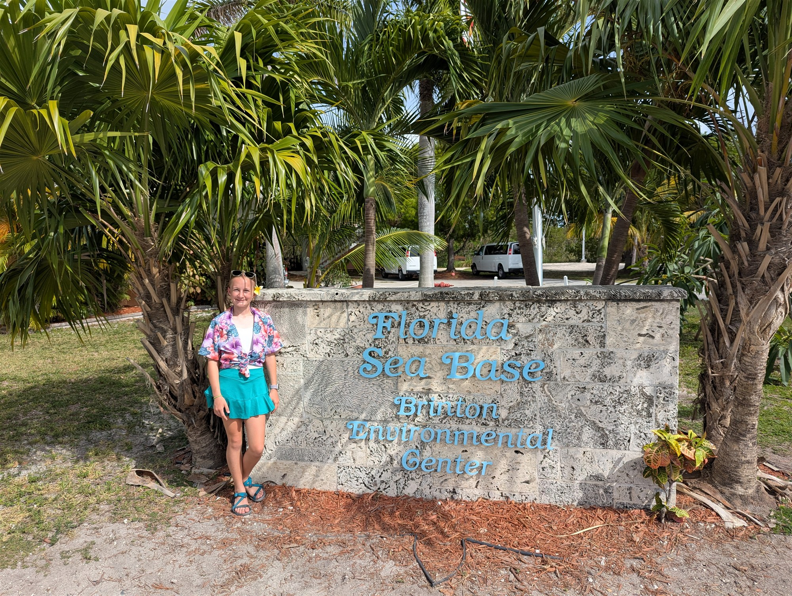
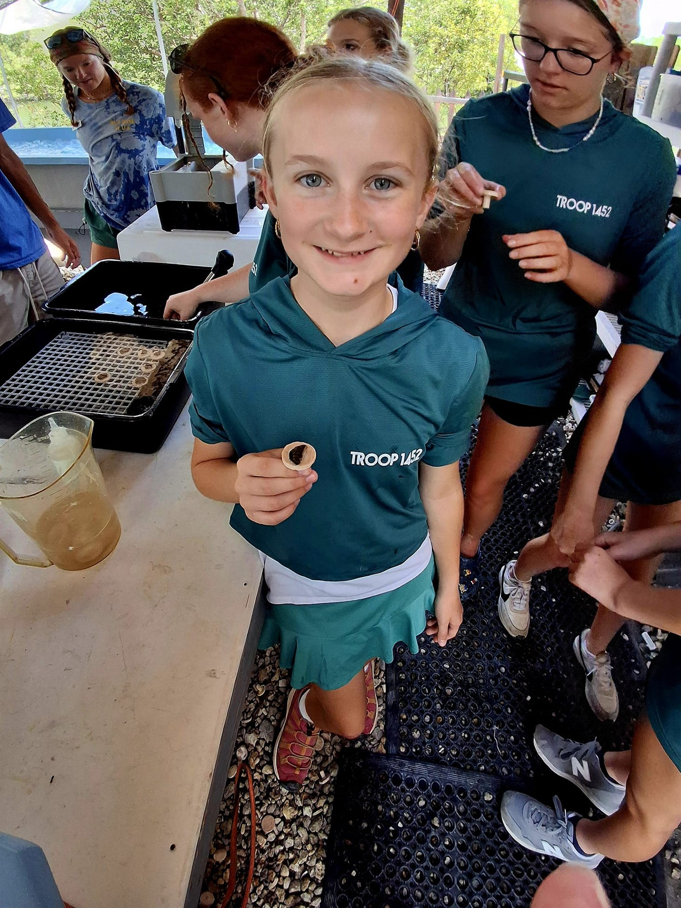
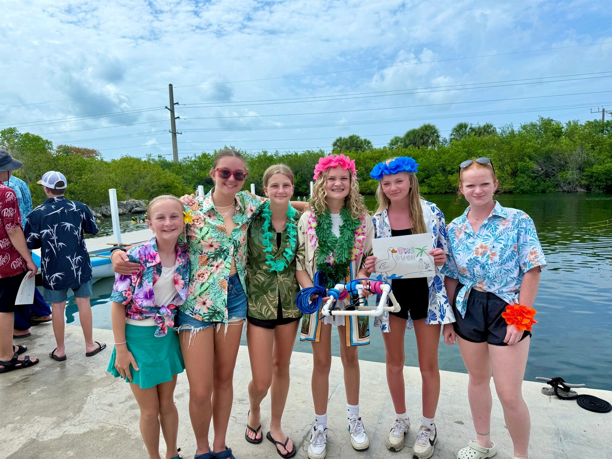
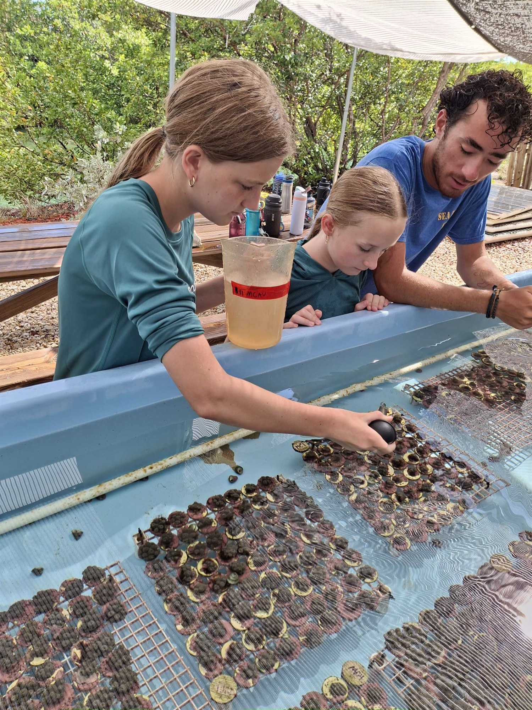

01 Summerland Key, Florida


Marine STEM Adventure
Florida
Sea Base
At Florida Sea Base, Lucy and her crew became marine scientists in one of the country's most remarkable ecosystems. They studied coral and shells, explored the waters of the Florida Keys, and engineered an underwater remotely operated vehicle as a team.
The Marine STEM Adventure combines science with conservation and high adventure. Scouts encounter mangroves, seagrass beds, and coral reefs while learning how researchers use fish surveys, coral restoration, species studies, reef monitoring, and tagging programs to protect ocean habitats.
- 01Hands-on marine science
- 02Coral and ecosystem conservation
- 03Underwater ROV engineering